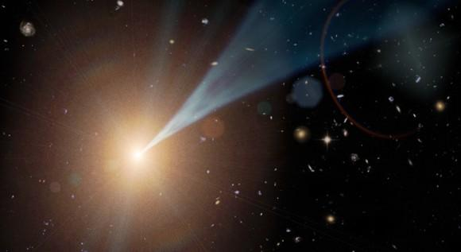
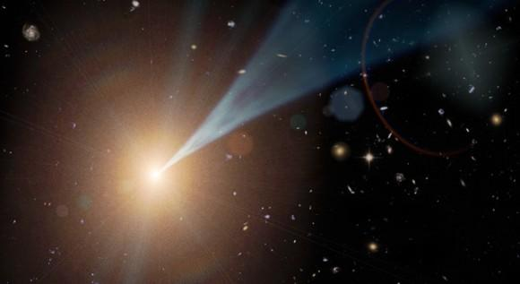

Un blazar è un nucleo galattico attivo (AGN, Active Galactic Nucleus) caratterizzato da un getto relativistico – un fascio di materia ionizzata che viaggia quasi alla velocità della luce – orientato quasi direttamente verso l'osservatore.
Il beaming relativistico della radiazione elettromagnetica emessa dal getto rende i blazar molto più luminosi di quanto apparirebbero se il getto fosse orientato in un'altra direzione. I blazar sono potenti sorgenti di emissione su tutto lo spettro elettromagnetico e sono osservati come sorgenti di fotoni gamma ad alta energia.
I blazar sono sorgenti altamente variabili, che mostrano fluttuazioni rapide e drammatiche nella luminosità su scale temporali brevi (ore o giorni). Alcuni getti di blazar sembrano esibire moto superluminale, un'altra conseguenza del materiale nel getto che viaggia verso l'osservatore a velocità prossime a quella della luce.
🎯 Importanza Scientifica
I blazar sono argomenti importanti di ricerca in astronomia e astrofisica ad alta energia. La ricerca sui blazar include l'investigazione delle proprietà dei dischi di accrescimento e dei getti, dei buchi neri supermassicci centrali e delle galassie ospiti, e dell'emissione di fotoni ad alta energia, raggi cosmici e neutrini.